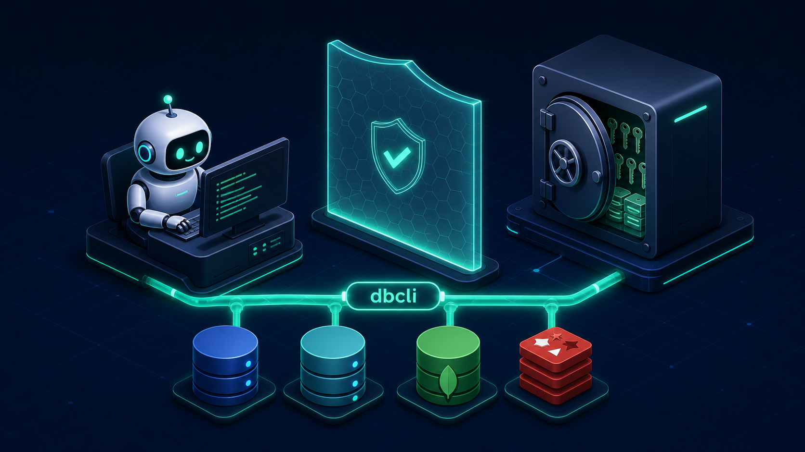
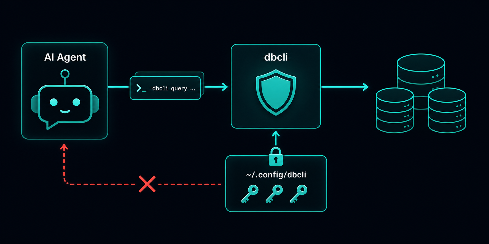
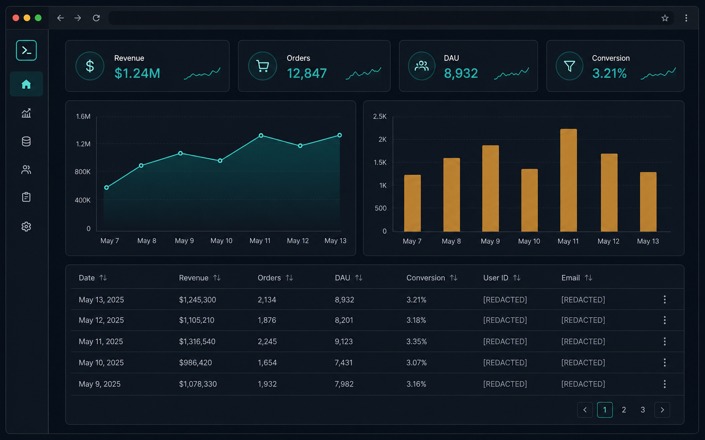

dbcli is a database CLI built for AI agents. Claude Code, Cursor, Copilot, Gemini, and others can inspect schemas, run queries, and generate reports without ever seeing your credentials or sensitive fields in chat.
$ npm install -g @carllee1983/dbcli # 或不安裝直接用 $ npx @carllee1983/dbcli init

The best part of vibe coding is when the Agent pulls the data and fixes the bug. The worst part is when it guesses the wrong column name, prints a password into chat history, or runs a DELETE without a WHERE clause across the whole table.
Paste a connection string into a prompt or project config and you are handing production secrets to every conversation and every commit.
Is the column named user_name or username?
A wrong guess means no result, or worse, a result you should never have seen.
No dry-run, no permission tiers, no audit trail. One runaway DELETE and your only option is the backup.
This is the fundamental difference between dbcli and giving an Agent a raw connection string. dbcli owns the credentials; the Agent only invokes commands and sees results, so passwords never flow through chat context.
The full connection config lives in ~/.config/dbcli/projects/<id>/,
while the project keeps only a non-sensitive binding stub. The Agent will not scan it, and it will not get committed by accident.
init --use-env-refs stores credentials as a runtime-resolved reference like
{"$env": "DB_PASSWORD"}, which is a good fit for CI/CD and multi-environment setups.
If CI is missing the key, it fails loudly instead of silently falling back to plaintext.
status, doctor, error messages, and audit logs
are all designed for Agent consumption without ever printing connection strings or passwords.
Local, staging, and prod are named connections inside the same project, each with independent credentials, permissions, and schema caches.
The most common setup is read-write locally so the Agent can experiment, while prod stays locked to query-only.
# Local DB: development use, writes allowed $ dbcli init --conn-name local --env-file .env.local --permission read-write # Prod DB: read-only + credentials stored as $env refs, no plaintext password in config $ dbcli init --conn-name prod --env-file .env.production \ --use-env-refs --permission query-only $ dbcli use local # Default to local day-to-day $ dbcli query --use prod "SELECT …" # Temporarily point at prod when needed; read-only only $ dbcli update --use prod orders … ✗ Permission denied: connection "prod" is query-only
Permissions follow the connection, not the conversation. No matter how the Agent is prompted, writes to prod are rejected at the dbcli layer. During debugging the Agent can compare both sides freely, but it can never accidentally mutate prod.

Add password, token, and PII fields to the blacklist,
and results are masked before they return to the Agent — including reports and HTML dashboards.
SQL columns/tables, MongoDB nested dot-path wildcards, and Redis key globs are supported.
$ dbcli blacklist column add users.password $ dbcli blacklist table add 'secrets:*' # Redis key glob is supported too $ dbcli query "SELECT id, email, password FROM users LIMIT 2" ┌────┬──────────────────┬──────────────┐ │ id │ email │ password │ ├────┼──────────────────┼──────────────┤ │ 1 │ a@example.com │ [REDACTED] │ │ 2 │ b@example.com │ [REDACTED] │ └────┴──────────────────┴──────────────┘
The default is query-only; give the Agent only the level it needs — it is just a flag.
Even when writes are enabled, every step still has guardrails.
--dry-run before execution.--where is required and intentionally limited to equality conditions to avoid broad mistakes.migrate defaults to dry-run; you need --execute to actually run it, and DROP still requires --force.Every operation leaves a metadata audit record, without SQL text or data values, so you can trace what the Agent did across sessions.
Add --recovery and failed runs persist a structured recovery plan automatically;
dbcli recover --apply executes the safe remediation steps under risk-based control.
dbcli plan can classify the risk level of a SQL statement without connecting;
Elasticsearch is read-only end-to-end, so writes are impossible there.
dbcli is not “a normal CLI that happens to be callable by an Agent.” Every output and workflow is designed for the Agent.
One line of dbcli skill --install claude gives the Agent its full operating manual.
schema users --format json returns real columns, estimated row counts, and size bands.
The skill says it plainly: do not guess column names; check schema first. MongoDB infers dot-path structure from sampling, and Redis shows key type and TTL.
“Diagnose a slow query,” “audit permissions,” “safe backfill,” “schema drift check”...
skill tasks plan emits a step-by-step plan with risk labels, so the Agent can follow it instead of inventing steps.
q @analytics/revenue --ui opens an HTML dashboard in the browser with KPI cards and charts.
It is a single shareable file, and blacklist masking happens before render.
Saved queries live in the repo in three layers — local, shared, and built-in @diag/* —
so the Agent can use queries suggest to find existing SQL by intent instead of rewriting it each time.
guide slow-query gives deterministic next-step commands;
report --section perf runs a complete check for slow queries, index usage, and cache hit rate.
Claude Code, Cursor, Copilot, Gemini, Codex, Windsurf, and Antigravity —
skill --install <platform> installs the workflow and full reference docs into the right directory.

dbcli ships both as a plugin marketplace package and as an installable agent skill.
If you choose the plugin path, you do not even need a global CLI install first - the plugin includes a
bunx @carllee1983/dbcli fallback and works immediately after installation.
Paste one command into the Agent, and the skill, full reference docs, and safe workflow are all in place. Start a new session and simply say "check the database for me."
# Claude Code /plugin marketplace add CarlLee1983/dbcli /plugin install dbcli-agent@dbcli-agent # Codex $ codex plugin marketplace add CarlLee1983/dbcli # → installs dbcli-agent in /plugins # GitHub Copilot CLI $ copilot plugin marketplace add CarlLee1983/dbcli $ copilot plugin install dbcli-agent@dbcli-agent # Cursor（Agent chat 內） /add-plugin dbcli-agent
skill --installAlready have the CLI installed globally? One command writes the skill docs (workflow plus full reference manual) into the correct platform skill directory. It works across all seven platforms and protects your existing configuration from being overwritten.
$ dbcli skill --install claude # Claude Code $ dbcli skill --install cursor # Cursor $ dbcli skill --install gemini # Gemini CLI # ... codex / copilot / windsurf / antigravity
No memorized commands, no SQL, and no need to know what N+1 means. You speak naturally, and the Agent follows the database SOP built into the skill to finish the job safely, then reports back in plain language. If you want the mechanics, every conversation can expand the "behind the scenes" commands.
status
column has a default value, but the actual schema does not. Ask the author to add it, or new writes will end up NULL.
price was changed to FLOAT.
Money in floating point will drift. Change it back to DECIMAL before staging, and I can draft the fix migration.
coupon field still uses a format from ten years ago, and your new code does not handle it.
I used read-only access to inspect the production data shape, then recreated the issue
locally with a matching test record, fixed it, and verified the fix.
Nothing in production changed at all, because the prod connection is query-only by default.
On the left, you hand the connection string straight to the Agent. On the right, you go through dbcli.
| Give the Agent the connection string directly | Go through dbcli | |
|---|---|---|
| Credential location | Shows up in prompts, chat logs, and project config files | Stored in ~/.config/dbcli or via $env references, never in conversation |
| Sensitive fields | Whatever SELECT returns is visible to the Agent | Blacklist masks them before return, including report output |
| Permission scope | The Agent gets every privilege the DB account has | Four permission levels start at the minimum and open up gradually |
| Write protection | Hoping the Agent behaves | dry-run preview, equality-based WHERE restrictions, DDL requires --execute |
| Runaway queries | Full table scans go out unchanged | Automatic LIMIT 1000 and large-table warnings |
| After-the-fact traceability | Rely on chat history and hope for the best | Audit logs plus recovery plans |
| Schema awareness | The Agent guesses fields from memory and imagination | schema caches the real structure, and guessing is explicitly banned |
For projects with a .env file that includes DATABASE_URL,
dbcli init resolves it automatically - no password typing required.
dbcli blacklist column add users.password,
then use dbcli status to confirm permission levels and masking scope.
dbcli skill --install claude (or cursor / copilot / gemini ...),
or add it directly in Claude Code / Codex with
/plugin marketplace add CarlLee1983/dbcli.
The Agent immediately learns the full safety flow: check blacklist first, then schema, and always dry-run writes.
"Why did yesterday's orders drop?" - the Agent runs
schema → query → report，
and you just read the result.
$ npm install -g @carllee1983/dbcli $ dbcli init # auto-parse .env and store settings in ~/.config/dbcli $ dbcli blacklist column add users.password # lock sensitive columns $ dbcli skill --install claude # give the Agent the full safe workflow $ dbcli query "SELECT * FROM orders" --ui # spin up an interactive report
Yes. You ask the Agent to handle data in natural language, and dbcli makes that safe: the Agent uses schema to confirm the real structure, uses saved queries and task packs for ready-made expert queries, and you never need to read the SQL in between - only the result.
The default permission is query-only, so it cannot even INSERT. Even if you raise it to
data-admin, DELETE still requires a WHERE clause, recommends dry-run first,
and equality restrictions block "scan the whole table" at the syntax level. DDL needs
admin + --execute + DROP with --force for triple confirmation.
MySQL、PostgreSQL、MariaDB、MongoDB、Redis、Elasticsearch， and a single project can define multiple named connections at once (staging / prod / per-tenant), each with its own credentials, permissions, and schema cache.
dbcli is the layer with built-in permissions and data protection: credential isolation, blacklist masking, permission tiers, dry-run, audit, and recovery all work out of the box. The same CLI works across seven Agent platforms, so it is not tied to any single protocol or editor, and humans can use it directly in the terminal too.
Both install the same skill bundle - workflow plus full reference docs - so the end result is the same. The difference is the entry point:
plugin installs from the Agent marketplace with a built-in bunx fallback,
so you do not need a global CLI install first, which makes it ideal for quick trials;
skill --install is better if dbcli is already installed globally,
because one CLI can deploy to all seven platforms and keep the skill docs aligned during upgrades.
Saved queries can live in .dbcli-shared/ and be shared in git;
credentials use --use-env-refs, so each person and each CI pipeline uses its own environment variables,
and the repo never contains plaintext passwords.
One-line install, minimum privileges by default, and no credential leakage. Hand the database to your Agent today - safely.